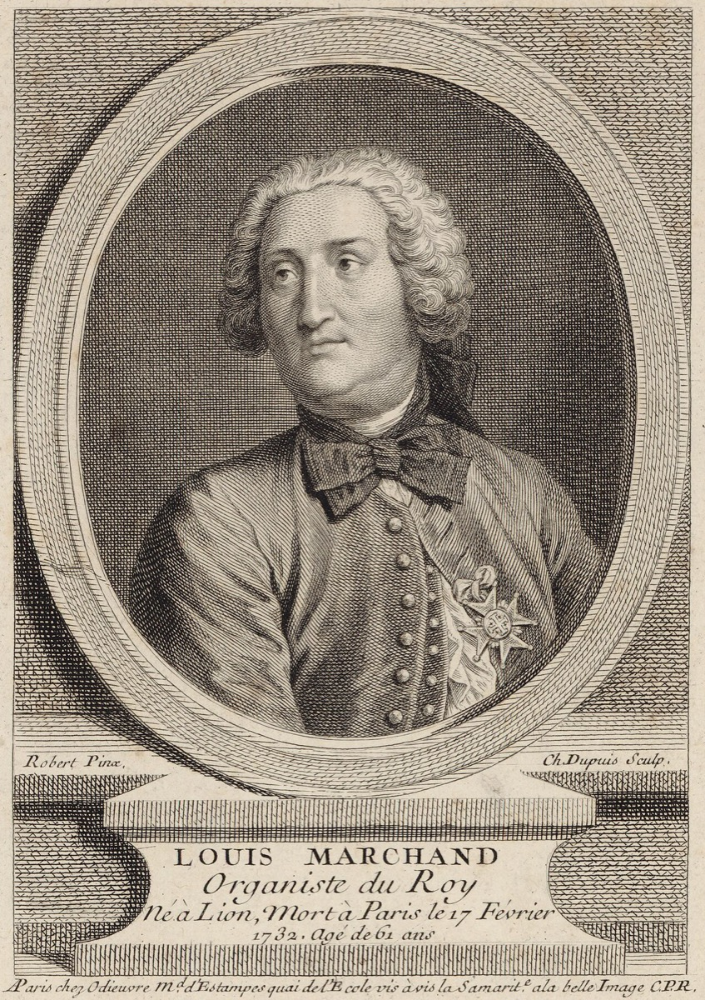

The duel that wasn't: Marchand flees Dresden

The best story of the Weimar years happened, if it happened, somewhere else entirely. In the autumn of 1717 — in the strange interval between the Cöthen appointment and the Weimar jail, when Bach had a new job he was not yet permitted to start — he visited Dresden, the Saxon electoral capital and the seat of the most brilliant musical establishment in Germany. Also visiting: Louis Marchand, the famous French organist-harpsichordist, exiled from Versailles and trailing celebrity across the German courts. Two virtuosi of international reputation in one city was an alignment the resident court musicians could not let pass, and they proposed the obvious entertainment: a keyboard contest before the assembled nobility — improvisation, sight-reading, the competitive disciplines of an age that treated keyboard mastery as a spectator sport.
The story, as Bach's circle told it: he accepted. The appointed hour arrived at the venue arranged; the noble company assembled; Bach was present — and Marchand was not. Inquiry discovered that the Frenchman had left Dresden that very morning by express coach, having, the tradition insists on adding, contrived to hear Bach practice the day before and drawn his own conclusions. Bach performed alone, to general astonishment, sole competitor and undisputed victor of a contest that never occurred. Even the epilogue is in character for the era's treatment of him: the promised purse of 500 thalers was allegedly embezzled by a court servant, so the winner of Germany's most famous keyboard duel went home unpaid.
Now the honesty this card owes its reader, because the provenance deserves a paragraph of its own. No Dresden document confirms the episode — no court diary, no payment record, no contemporary letter. Every detail comes from Bach's own circle, and not from 1717 but twenty-odd years later: the Obituary compiled after his death, and Birnbaum's printed defense of 1739 — both occasions on which the story was being deployed, explicitly, to defend Bach's honor in a public controversy. Marchand's side was never heard; he left no known account at all. The scaffolding checks out — both men were verifiably in Dresden, and the contest custom was real — but the dramaturgy is suspiciously perfect: the arrogant foreigner, the secret listening, the dawn flight, even the embezzled purse supplying the final ironic grace note. This is why the card is flagged tradition rather than documented, with the note that even the skeptical Williams grants a kernel: something probably happened in Dresden that autumn involving these two men, and Marchand probably did leave; the rest is testimony from one side, polished by decades of retelling.
Yet a story does not need to be strictly true to do historical work, and this one did more work than most documented facts. Whatever occurred in Dresden, the tale as told made Bach a national champion — German thoroughness routing French elegance without a note being contested — and it did so decades before nationalism came to claim him in earnest. When Forkel wrote the first full biography in 1802, framing Bach as a patrimony of the German nation, the Marchand story was exactly the note he leaned on: Arc II's nationalist revival found its founding anecdote already composed, waiting in the Obituary. Few embellishments in music history have compounded at such interest.
And the story fixes something easily lost from the modern vantage: what Bach's own age actually thought he was. To the eighteenth century he was, above all, the most terrifying performer alive — the man other virtuosi fled by coach rather than face, the organist summoned to examine instruments and humble rivals. His supremacy as a composer is posterity's discovery, assembled by later generations out of scores his contemporaries mostly never heard. The Dresden tale, true or embroidered, is a fossil of the original reputation. It is fitting, in a way the tellers cannot have intended, that the era of his life spent playing for a duke who undervalued him should end with this image: Bach alone at the keyboard, the competition already gone, the audience astonished, and the prize money missing.
Continue with the era essay: Weimar: the organ decade and the Italian conversion, or follow him out of Weimar: the Cöthen appointment.
The Obituary (Nekrolog), 1754; Birnbaum, 1739 (New Bach Reader)
Wolff, The Learned Musician, ch. 6
→ full bibliography & links